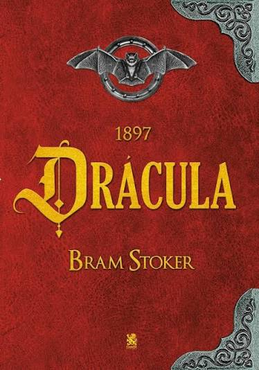

Drácula -
O clássico romance Drácula, escrito por Bram Stoker em 1897, acompanha a viagem do advogado Jonathan Harker à Transilvânia, a invasão do Conde Drácula à Inglaterra e a caçada ao vampiro liderada pelo Professor Van Helsing.
Estudante de Análise e Desenvolvimento de Sistemas no IFSC - Campus São José.
| Dias da semana | ||||||
|---|---|---|---|---|---|---|
| Hora | Seg | Ter | Qua | Qui | Sex | |
| Horários | 18h30 | Extensão 1 | POO | Estatística | Comunicação | Estatística |
| 19h25 | Extensão 1 | POO | Estatística | Comunicação | Estatística | |
| 20h40 | Redes | Front End | POO | Redes | Front end | |
| 21h35 | Redes | Front End | POO | Redes | Front end | |
 Livros
Livros

O clássico romance Drácula, escrito por Bram Stoker em 1897, acompanha a viagem do advogado Jonathan Harker à Transilvânia, a invasão do Conde Drácula à Inglaterra e a caçada ao vampiro liderada pelo Professor Van Helsing.

Trata-se de uma série de livros de alta fantasia. Martin começou a desenvolvê-la em 1991 e o primeiro volume foi lançado em 1996. Originalmente concebida para ser uma trilogia, a série consiste em cinco volumes publicados.

Romance de ficção científica de 1968, escrito por Philip K. Dick. Narra a crise moral de Rick Deckard, um caçador de recompensas que persegue androides numa San Francisco pós-nuclear. Adaptado ao cinema por Ridley Scott em 1982 como Blade Runner.
 Playlist Before the Devil Knows
Playlist Before the Devil Knows
Playing now: HoliznaCC0 - House Of The Rising Sun